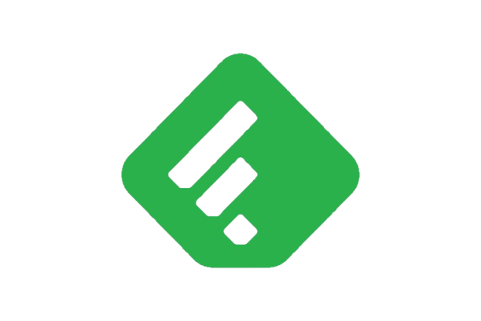
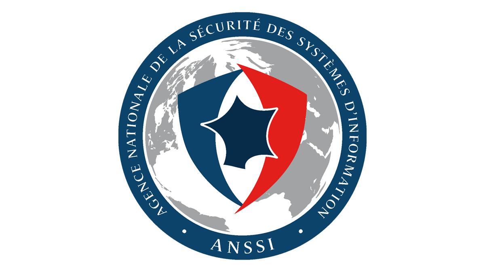

Veille technologique
Sujet : Zero Trust Architecture — La fin du périmètre réseau traditionnel
Contexte du sujet
Le modèle Zero Trust ("Ne jamais faire confiance, toujours vérifier") révolutionne la cybersécurité. Avec le télétravail massif, le cloud et les cyberattaques sophistiquées, le périmètre réseau traditionnel (firewall = protection) est obsolète.
Zero Trust impose une vérification continue de chaque utilisateur, appareil et connexion, même à l'intérieur du réseau.
Pourquoi ce sujet ?
- Tendance majeure : Gartner prédit que 60% des entreprises adopteront Zero Trust d'ici 2025.
- Lien SISR : Active Directory, VPN, segmentation réseau, authentification MFA.
- Peu choisi : Sujet technique et récent, différent des classiques "ransomware" ou "cloud".
- Avenir : Compétence recherchée sur le marché de l'emploi IT.
Les 5 piliers du Zero Trust
Identité
Vérification forte de l'identité (MFA, SSO, biométrie) avant tout accès.
Appareils
Contrôle de conformité des endpoints (MDM, EDR, état de sécurité).
Réseau
Micro-segmentation, chiffrement de bout en bout, pas de confiance implicite.
Applications
Accès conditionnel basé sur le contexte, API sécurisées, conteneurisation.
Données
Classification, chiffrement, DLP (Data Loss Prevention), audit permanent.
Lien avec la CEJM
Économique
Réduction des coûts liés aux incidents (en moyenne 4,35M$ par breach en 2023). ROI prouvé du Zero Trust.
Juridique
Conformité RGPD, NIS2, exigences de traçabilité. Protection des données personnelles obligatoire.
Managérial
Changement de culture : sensibilisation des employés, gestion du changement, nouvelles politiques d'accès.
Stratégique
Avantage concurrentiel, confiance des clients, résilience face aux menaces, transformation digitale.
Outils de veille utilisés
Google Alerts
Alertes email automatiques sur "Zero Trust", "ZTNA", "cybersecurity architecture".
Twitter / X
Suivi des experts : @ABORDEAUX, @CISOresilience, @zeabordeaux, hashtag #ZeroTrust.

Feedly
Agrégateur RSS centralisant CERT-FR, Krebs on Security, The Hacker News, Bleeping Computer.
Groupes professionnels cybersécurité, articles d'experts, veille sectorielle.
Subreddits r/netsec, r/cybersecurity, r/zerotrust pour discussions techniques.

CERT-FR / ANSSI
Bulletins officiels de sécurité, alertes CVE, recommandations nationales.
Actualités en temps réel
Flux RSS automatisé — Sélectionnez une source pour voir les dernières actualités cybersécurité
- Chargement des actualités...
Analyse SWOT du Zero Trust
Forces
- Sécurité renforcée contre les menaces internes et externes
- Visibilité complète sur tous les accès et activités
- Adapté au cloud et au travail hybride
- Réduction de la surface d'attaque
Faiblesses
- Coût d'implémentation élevé
- Complexité de déploiement
- Résistance au changement des utilisateurs
- Nécessite une refonte de l'infrastructure
Opportunités
- Conformité réglementaire (RGPD, NIS2)
- Marché en forte croissance
- Solutions SaaS accessibles (Azure AD, Okta)
- Différenciation concurrentielle
Menaces
- Évolution rapide des cybermenaces
- Pénurie de compétences en cybersécurité
- Faux sentiment de sécurité si mal implémenté
- Dépendance aux fournisseurs cloud
Évolution du Zero Trust
Naissance du concept
John Kindervag (Forrester) introduit le terme "Zero Trust" et ses principes fondamentaux.
Google BeyondCorp
Google déploie BeyondCorp en interne, prouvant la viabilité du modèle à grande échelle.
Accélération COVID
Le télétravail massif force les entreprises à repenser leur sécurité périmétrique.
Directive US
Biden signe un décret imposant Zero Trust aux agences fédérales américaines.
Standard de facto
Zero Trust devient le framework de référence pour la cybersécurité moderne.
Conclusion
Le Zero Trust n'est plus une option mais une nécessité. Face à l'évolution des menaces et la transformation digitale des entreprises, ce modèle offre une approche de sécurité adaptée aux enjeux actuels.
Pour un futur technicien SISR, maîtriser ces concepts est un atout majeur : Active Directory conditionnel, segmentation réseau, MFA, et monitoring sont au cœur des infrastructures modernes.